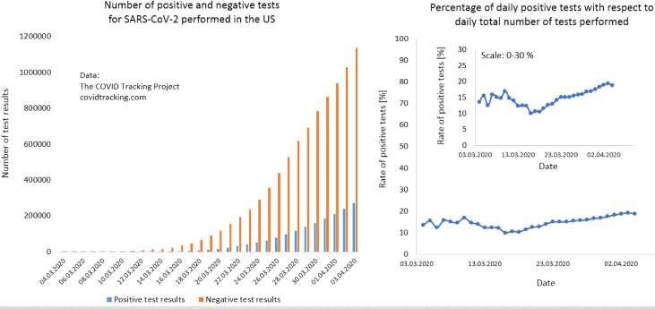
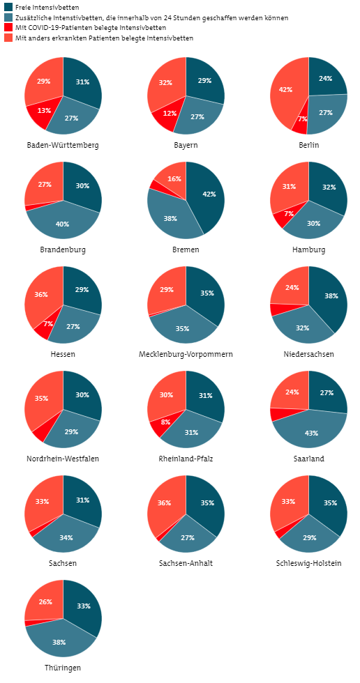
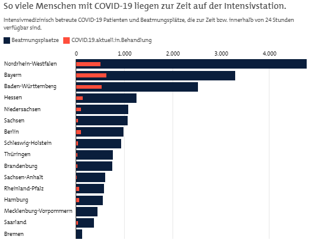
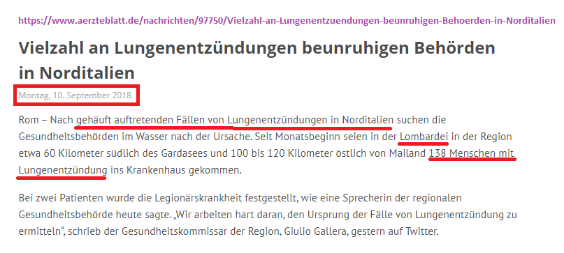
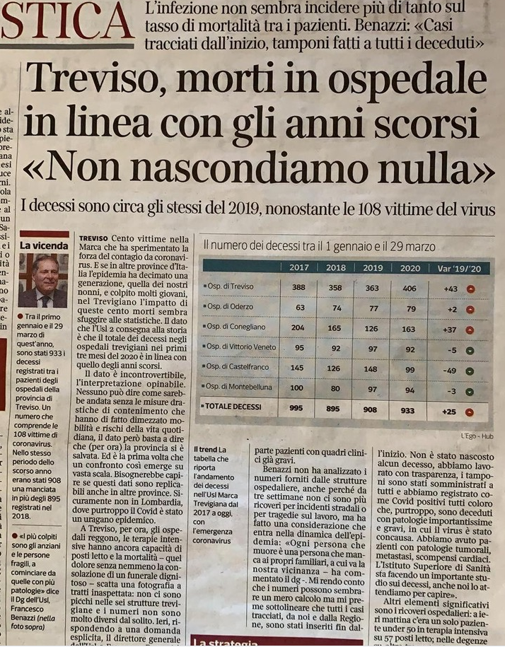
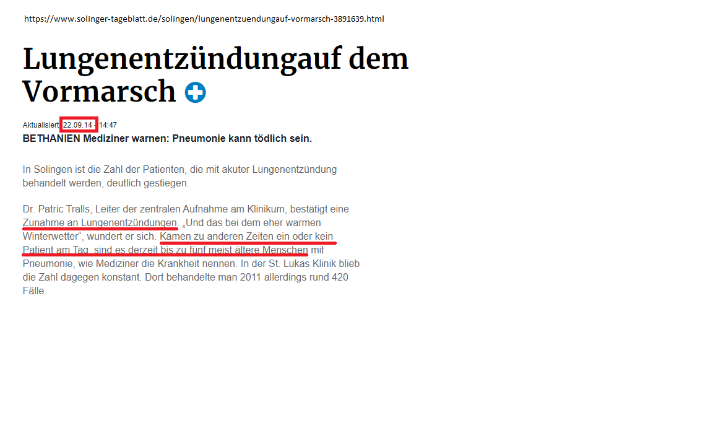

Es ist etwas faul, und das nicht nur im Staate Dänemark. Es stinkt geradezu.
Die Regierung und die Medien bombardieren uns täglich mit neuen und noch höheren Zahlen, die eine ausserordentlich gefährliche Corona Epidemie suggerieren sollen und sogar dazu verwendet werden, um verfassungsmässig zugesicherte Grundrechte ausser Kraft zu setzen. Deshalb ist es dringend nötig, diese Zahlen kritisch zu untersuchen.
Niemand kennt die tatsächliche Zahl der Infizierten
Der wichtigste Kritikpunkt an diesen Zahlen ist, dass niemand die tatsächliche Zahl der Infizierten kennt, auch das WHO nicht.
Deshalb sind auch alle daraus abgeleiteten Zahlen wie Übertragungsgeschwindigkeit und Todesfallrate (Mortalität) nur Mutmassungen, da diese Zahlen in Relation zu der eben unbekannten tatsächlichen Zahl der Infizierten stehen.
Ist zum Beispiel die tatsächliche Zahl der Infizierten 10 Mal höher als berichtet wird (die sogenannte Dunkelziffer), wird entsprechend auch die Todesfallrate 10 Mal überschätzt (und ist tatsächlich 10 Mal geringer).
Eine 10 Mal höhere Dunkelziffer wird von manchen Wissenschaftern als plausibel angenommen.
Felix Scholkmann stellte das Verhältnis von Tests zu Test-Positiven in den USA grafisch dar:

Diese Grafik ist aussagekräftiger als die nackte Präsentation von Fallzahlen, da die Zahl der positiv getesteten zumindest mit der Anzahl Tests verglichen wird (linke Grafik).
Dies erlaubt es, wenigstens eine prozentuale (relative) statt absolute Zunahme zu beziffern (rechte Grafiken).
Wie sich herausstellt, hält sich diese Zunahme in Grenzen.
Da aber (zumindest mir) unbekannt ist, wer getestet wurde, sind nicht einmal diese Grafiken aussagekräftig, da komplett andere Grafiken erwartet werden, wenn man flächendeckend die ganze Bevölkerung testet, oder nur die, die Symptome zeigen.
Es wird nicht unterschieden, ob jemand an oder mit Covid-19 gestorben ist
Ein weiterer Kritikpunkt ist, dass praktisch nie unterschieden wird, ob jemand an oder mit Covid-19 gestorben ist.
Etwas plakativ, aber auf den Punkt gebracht, wird dies in einem Österreichischen Zeitungsartikel vom 2. April 2020 bemerkt:
Flapsig zählt also auch ein 90-Jähriger, der mit einem Oberschenkelhalsbruch stirbt und sich in den Stunden vor seinem Tod mit Corona infiziert,
als Corona-Toter.
Die wenigen Ergebnisse aus Italien deuten darauf hin, dass nur ein verschwindend kleiner Teil an Covid-19 gestorben ist. Man geht von 0,8% aus, die Standford University redet sogar von nur 0,05% (!), die möglicherweise an Covid gestorben sind.
Ob jemand
an oder
mit Covid-19 gestorben ist, kann mit Sicherheit nur mit einer Autopsie (Obduktion) beurteilt werden. Die Autopsie erlaubt festzustellen,
- ob ein Covid-19 infizierter tatsächlich wegen des Virus gestorben ist, und
- warum er daran gestorben ist.
Bodo Schiffmann behauptet, dass wir innerhalb einer Woche (!) in der Lage wären, zu beurteilen, ob wir sofort aus den Beschränkungen heraussteigen können, oder sie verschärfen müssen, wenn man
konsequent die mit Covid-19 gestorbenen obduzierte.
Doch das
Robert Koch Institut (RKI) rät davon ab, da das Risiko einer Tröpfcheninfektion durch Aerosole angeblich zu hoch sei.
Ein anonym bleibender Facharzt für Immonologie kommentiert die Autopsie-Weigerung(?) des RKI so:
Ein Schelm, wer böses dabei denkt! Bisher war es für Pathologen
selbstverständlich, mit entsprechenden Sicherheitsvorkehrungen auch bei
infektiösen Erkrankungen wie HIV/AIDS, Hepatitis, Tuberkulose,
PRION-Erkrankungen usw. zu obduzieren. Es ist schon bemerkenswert, dass bei
einer Seuche, die über den ganzen Globus hinweg Tausende von Patienten dahin
rafft und die Wirtschaft ganzer Länder nahezu zum Stillstand bringt, nur
äußerst spärliche Obduktionsbefunde (sechs Patienten aus China) vorliegen.
Sowohl aus seuchenpolizeilicher als auch aus wissenschaftlicher Sicht sollte
hier doch ein besonders großes öffentliches Interesse an Obduktionsbefunden
bestehen. Das Gegenteil ist aber der Fall. Hat man Angst, davor, die wahren
Todesursachen der positiv getesteten Verstorbenen zu erfahren? Könnte es sein,
dass die Zahlen der Corona-Toten dann dahin schmelzen würden wie Schnee in der
Frühlingssonne.
Offenbar hat in der Zwischenzeit das RKI seine Begründung, keine Autopsien zu wollen, geändert.
Nun heißt es plötzlich, der Erreger sei post mortem oftmals gar nicht mehr nachweisbar.
Eine Kehrtwendung, die das vollkommen ungenügende wissenschaftliche Fundament dieses Instituts drastisch beleuchtet.
Schweden führt als eines der wenigen Länder eine liberale Politik und hält zum Beispiel Restaurants, Cafés und Skilifte offen. Da nun der internationale Druck auf Schweden wächst, eine ähnliche Panik
zu generieren, hat Schweden als erstes Land beschlossen, bei der Todesstatistik zwischen Patienten, die an und die mit Corona gestorben sind, zu unterscheiden.
Seit ca. Anfangs April 2020 wird nun auch in Hamburg bei an sogenannt an Covid-19 gestorbenen Patienten eine solche Untersuchung durchgeführt. Merkur.de kommentiert:
Der Unterschied zwischen den Zählweisen ist gravierend:
Klaus Püschel, der Direktor des Instituts für Rechtsmedizin am Universitätsklinikum Hamburg-Eppendorf, sagt sogar, dass jeder, der
am Virus gestorben
ist, bereits eine Vorerkrankung hatte.
Weitere Zahlenjonglationen
Das Robert Koch Institut, das sich bereits wegen der Autopsieweigerung in ein schlechtes Licht rückte, fällt auch durch eine ganz interessante Zahlenjonglation auf. So berichtetete es von einer Zunahme von 1486
auf 2424 Covid-Patienten in intensivmedizinischer Behandlung
zwischen 31.3.2020 und 3.4.2020:
| 31.3 | 1486 | +268 |
| 1.4 | 1876 | +390 |
| 2.4 | 2139 | +263 |
| 3.4 | 2424 | +285 |
Es sieht so aus, also ob in dieser Periode jeden Tag zwischen 260 und 390 neue Fälle ins Krankenhaus kommen.
Das RKI erwähnt aber nur beiläufig, dass Anzahl der Kliniken, die Zahlen melden, im gleichen Zeitraum von 814 auf 1052 Kliniken gestiegen ist. Nicht die Patientenanzahl ist gestiegen, sondern die Zahl der meldenden Kliniken.
Es ist dieser RKI Statistik auch nicht ersichtlich, dass die Zahl der freien Intensivbetten im gleichen Zeitraum von 7365 auf 9178 gestiegen ist.
Seit 4.4 gibt es diese Liste im täglichen Lagebericht nicht mehr.
Beatmungsplätze im Verhältnis zu Corona
Interessant finde ich überigens auch die folgenden Grafiken, Stand 5. April 2020. Sie zeigen, dass ein verhältnismässig kleiner Anteil von Beatmungsplätzen von Patienten mit Covid-19 belegt werden.
Und wie weiter oben beschrieben, ist auch hier keineswegs sicher, dass sie diese Beatmungsplätze belegen, weil sie Träger des Virus sind.


Norditalien
In Norditalien wütet das Coronavirus speziell schlimm. Das steht ausser Frage. Auch nicht, dass die Mortatlität höher ist, als durchschnittlich. Es müssen aber folgende Punkte beachtet werden:
- Im Vergleich zu den beiden letzten grossen Grippewellen sind immer noch weniger gestorben.
- Norditalien hat einen sehr hohen Anteil an alten Menschen
- Die grösste Luftverschmutzung Europas begünstigt Lungeninfektionen.
- Die vielen chinesische Gastarbeiter haben nach dem Chinesischen Neujahrsfest in grosser Wahrscheinlichkeit das Virus in grosser Zahl nach Italien gebracht.
- Mitte Januar wurden 34'000 Menschen gegen Pneumokokken geimpft, was das Immunsystem zusätzlich geschwächt hat.
- Italien zählt 11000 nosokomial begründete Krankenhaustote (Deutschland: 2600)
- (Nord-?) Italien hatte schon in den letzten Grippewellen Probleme mit ihrer Bettenkapazität
- Die Anzahl der atypischen Pneunomien haben in den letzten (wieviel?) Jahren um 30% zugenommen.
- In Italien wird offenbar Antibiotika noch liberaler verschrieben als in Deutschland, was zur Folge hat, dass das Immunsystem noch mehr geschwächt ist.
Die tragischen Fälle in Italien, Frankreich und Spanien sind zu einem grossen Teil der Tatsache geschuldet, dass in diesen Ländern das Gesundheitssystem stärker wie in den DACH Ländern zu Tode gespart wurde.
Dies betrifft nicht nur die Zahl der Intensivbetten, sondern drückt sich auch in der Zahl der nosokomial (also im Spital wegen eklatantem Hygienemangel) erworbenen Infektionen aus.
Bereits im September 2018, also noch lange vor der Koronakrise, berichtete das Ärzteblatt von gehäuft auftretenden Fällen von Lungenentzündungen:

In Italien wurde ein Gesetz erlassen, dass die Leichen mit dem Coronavirus kremiert werden müssen (vgl Robert Koch Institut…). Bis dahin wurden in Italien nur wenige Feuerbestattungen vollzogen, so dass die
wenigen Krematorien bald an ihre Grenzen stiessen und die Verstorbenen in verschiedenen Kirchen aufgebahrt wurden. Die Presse stellte dies natürlich so dar, als ob es auf ein Mal sehr viel mehr Tote gibt.
Trotz allem: in Treviso (bei Venedig) wurde bis Ende März trotz 108 testpositiven Verstorbenen eine in etwa gleichbleibende Mortalität gemessen wie in den Vorjahren.

Diese Zahlen sind ein weiterer Hinweis darauf, dass die temporär erhöhte Mortalität an einigen Orten eher mit Drittfaktoren wie Panik und Kollaps zu tun haben dürften, als nur mit dem Coronavirus.
Andere (lokale) Zunahmen an Lungenentzündungen
Dass Lungenentzündungen (lokal) sprunghaft und ausserordentlich zunehmen können, war bereits 2014 bekannt und ist von Covid unabhängig:

Zahlen aus dem Kanton Zürich
Jeden Tag sterben in der Schweiz durchschnittlich 114 Menschen, die älter als 80 Jahre sind. Auf den Kanton Zürich heruntergebrochen sind das 19 Personen pro Tag.
Seit Erhebung der Coronatoten im Kanton Zürich sind per 2. April 2019, nach offiziellen Angaben, 36 Tote wegen Corona zu beklagen.
Auch hier: der rasante Anstieg von Todesfällen findet nicht statt.
Pressefreiheit
(Update 2020-04-08) In einem
Interview (YouTube) mit Flavio von Witzmann (
Rubikon) erklärt Bodo Schiffman (ca. 26:22)
Ich habe aus zwei grossen Häusern die Stallorder: «es wird keine relativierende Berichterstattung zu COVID geben»
Das heisst: es gibt tatsächlich keine Pressefreiheit - die Presse sagt, was dem Robert Koch Institut hier gefällt.
Deja Vue
Corona ist ein Deja-Vue der Schweinegrippe, wo die Deutschen Bundesländer für 239 Millionen Euro Impfstoffe bestellen, gegen eine Pandemie, die keine war, sondern sich als Fake herausstellte.
Folgerung
Die Datenlage lässt meines Erachtens nur einen Schluss zu: wir werden vom Staat und den Medien belogen und irregeführt. Ob wissentlich oder nicht, kann ich nicht beurteilen.
Ich denke übrigens nicht, dass es fünf vor zwölf ist, wohl eher 19:33 Uhr (sic).
Sonstiges
Diese Informationen sind meine persönliche Meinung und Ergebnis meiner persönlichen Recherche.
Sie unterstreichen mein Recht auf freie Meinungsäußerung und Pressefreiheit.
Covid-19 und Influenza sine Erkrankungen vor denen man sich schützen sollte. Gerade Risikogruppen
benötigen einen besonderen Schutz.
Links
Am meisten profitiert habe ich von folgenden Links: